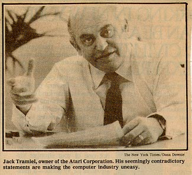

ATLANTA, May 8th, -- Atari Corporation made an unexpected appearance at the Comdex personal computer trade show here to convince a skeptical industry that the company was viable and that its new products would soon come to market.
But after two days of statements that seemed contradictory, vague promises about the future of a new computer and sketchy descriptions of future models, there seemed to be more doubters than ever.
"We've seen marketing strategies changed before our eyes," said Barbam Isgur, an analyst and consultant who follows the consumer electronics industry, as she emerged from an Atari meeting.
Others expressed amazement that Jack Tramiel, Atari’s tough-acting and unpredictable owner, was still the center of industry attention, even while his products and his company faced an uncertain fate.
Ousted From Commodore
Mr. Tramiel bought the company from Warner Communications Inc. last year, after he was ousted as chief executive of Commodore International Ltd., Atari’s archrival. The deal involved no cash, and gave Warner a 32 percent stake in the company. The company bears little resemblance to its old self. Mr. Tramiel has replaced all of the executives and is rapidly replacing the product line.
Everywhere that Mr. Tramiel went in the sprawling Georgia World Congress Center, where the Comdex show was held, he seemed to leave a trail of confusion. Most of it concerned an innovative, new home computer, called the Atari 520ST. Like Commodore's forthcoming Amiga computer - which was shown only to a select few in a hotel room near the conference --- the Atari machine sports the fancy graphics and easy-to use features of Apple Computer Inc.'s Macintosh. Both will sell for about a third of the Macintosh's price.
The Atari computer's graphics are stunning, and unlike the Macintosh, it works in color. Many in the decimated home computer and software industry are rooting for Atari, hoping it will make consumers excited about computers once again.
But Atari's first promise
is already going sour. Early in the year, Mr. Tramiel said shipment
of the 520SL would begin by April - a statement Atari now denies was made
- but at Comdex the shipping date became July. With July two months
away, it was still not clear where those shipments would be headed. . In
January, when he first showed the computer, Mr. Tramiel said the 520SL
would be sold in the same manner as previous Atari and Commodore home machines:
through mass marketers such as K Mart and Toys "R" Us.
Plan Is Changed
But by last Monday, the plan had suddenly changed. Mr. Tramiel said the machine was too complex for un-trained salesmen and competed with far more expensive models, so it would be sold through computer specialty stores, alongside IBM PC's and Apples.
At a news conference on Tuesday, he changed the plan again. The sophisticated version would be sold in specialty stores, and a stripped-down, less-powerful model, the 520ST, never before publicly mentioned would be on mass-marketers' shelves by August. "The press seems to have trouble getting this right," Mr. Tramiel said.
When Atari officials were asked at the news conference to list the computer dealers that would be handling the 520ST when volume shipments begin in July, they could not name one.
As a result, few in the industry believe they will ever see production models of the 520ST. And those who do, doubt that it will happen any time soon.
Computer specialty stores have been shy of Mr. Tramiel since his Commodore days, when he first sold his inexpensive computers through them, then abruptly provided the products to discounters. That left the specialty stores with large inventories of overpriced machines, and few warm feelings for Mr. Tramiel. In the absence of many other computers to offer home users, however, especially after the demise of IBM’s PCjr, retailers may have no choice but to deal with Mr. Tramiel.
"IBM and Apple are really not treating the low end of the market right," said William E. Ladin Jr., chairman of Computer craft, a chain of 61 computer stores in the Southwest. "Jack Tramiel has the right idea. I'd like to see it all work out. "
Even Mr. Ladin, however, worries whether it is worth the effort to sell an $800 machine. "It took far more hand holding and explaining to sell a PCjr to a first-time customer for $800 than to sell a $5000 PC-AT to a veteran," Mr. Ladin said, recalling IBM’s Christmas promotion of the PCjr. "We sold a bunch, but my salesmen hated me."
Software is another problem for Atari. While the new Atari machine is similar to the Macintosh, it uses an entirely different operating system, called Gem, that was designed by Digital Research Inc.
Atari officials assert that more than 100 software titles will be available for the machine, most written by small software houses that desperately need work. At the show on Monday, Sigmund Hartmann, a former Commodore executive brought in by Mr. Tramiel to head the software effort, also hinted that the prestigious Microsoft International Inc. might be preparing a program or two for the Atari machine. "We're shipping them a machine and they're real interested," he said.
But on Tuesday, Microsoft's chairman, William Gates, said, "At this point, we have no plans for the Atari machine, nothing under development". Atari's future may be ultimately determined by its finances, not its new products. The company's financial situation is poor, because sales of Atari's old line are "very, very slow," Mr. Tramiel said, in part because of continuing legal wrangles with Warner and Commodore. A lack of funds could slow development of two other long-promised Atari products: a 32-bit computer for business use, which the company has yet to show, and a $500 compact disk reader - similar to those used for high-quality music recordings - that, can store vast amounts of information.
"We'll have them by fall," Mr. Tramiel said, adding that the compact disk drive would make it possible to put encyclopedias, legal casebooks and patents in electronic form, all available to consumers for a relatively low price. "My slogan is the best value and the highest technology, and that is what I will deliver."
Mr. Tramiel is a tough competitor,
and while he rarely delivers all that he promises, he has always delivered
something. Not everyone is willing to write him off.
"Obviously, they are having pains," said Dick Bratt, vice president
of engineering and development for Spinnaker Software, a Cambridge, Mass.,
concern writing programs for the company. "There's a temptation to
jump on the coffin and start spitting nails in. But Jack Tramiel
is a winner. I wouldn't bet against him."